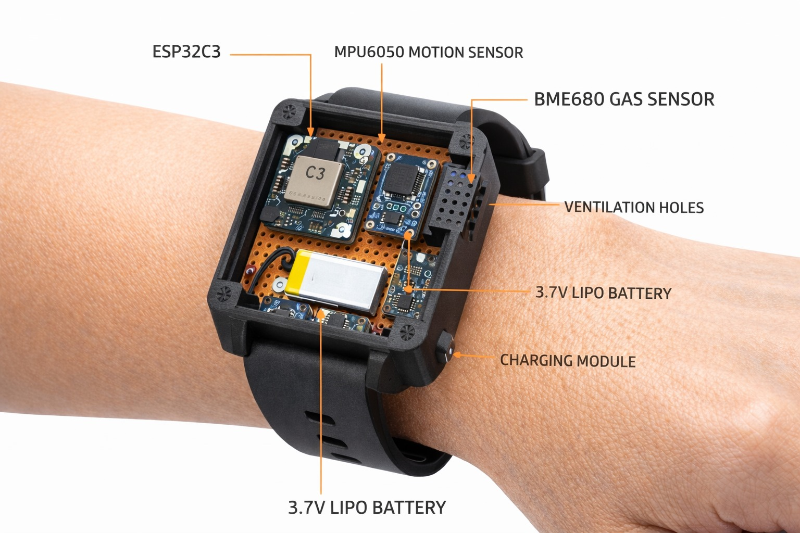

A complete product experience combining the SmartQuit Band, BreatheFree companion app, and multimodal AI detection to support cravings in real time.

MQ9 + MPU6050 + ESP32
Context-aware intervention engine
Smoking addiction affects millions globally. Traditional cessation methods often fail due to lack of real-time intervention and objective tracking.
Self-reporting is unreliable and creates cognitive burden during vulnerable moments
Loved ones want to help but lack visibility into smoking patterns and progress
Rehab consultants need objective data to provide personalized guidance and track client outcomes
A complete smoking cessation package combining hardware and software for users, families, and consultants
Wearable watch with ESP32 microcontroller, MQ9 gas sensor (smoke detection), and MPU6050 IMU (gesture recognition). Runs ML models on-device for real-time smoking event detection with 90%+ accuracy.
Flutter-based companion app with 10 evidence-based interventions, real-time progress tracking, and pattern analysis. Connects via BLE for seamless data sync.
Fuses motion data (MPU6050), gas sensor readings (MQ9), and behavioral inputs to create comprehensive smoking profiles using edge AI inference.
The band detects risky moments, the app delivers immediate support, and progress insights build confidence against addiction over time.
The wearable continuously reads motion patterns (MPU6050) and smoke signatures (MQ9). It recognizes likely smoking behavior in real time instead of relying on manual self-reporting.
An on-device ML model fuses both signals and detects smoking events with a confidence score. This allows fast, private, low-latency detection without cloud dependency.
The app receives secure BLE alerts and immediately responds with evidence-based interventions like breathing, mindfulness, journaling, and urge-management tools.
Users receive help exactly when cravings happen, build awareness of their triggers, and track progress across days and weeks. With consent, family and consultants can support the recovery plan using objective insights.
Hardware and software architecture of the SmartQuit ecosystem
Dual-core processor with BLE for low-power wearable operation
Detects CO and combustible gases from cigarette smoke
6-axis motion tracking for gesture pattern recognition
Edge Impulse-trained neural network running on ESP32
Instant intervention access in BreatheFree app
Breathing, games, mindfulness, sketching techniques
Multi-user access for patients, families, consultants
Local SQLite storage, encrypted BLE, consent-based sharing
This is an open research project designed for smoking cessation support. Ideal for individuals trying to quit, family members providing support, and consultants guiding rehab programs.
Download BreatheFree AppHardware specs: ESP32 + MQ9 + MPU6050 | Software: Flutter + ML